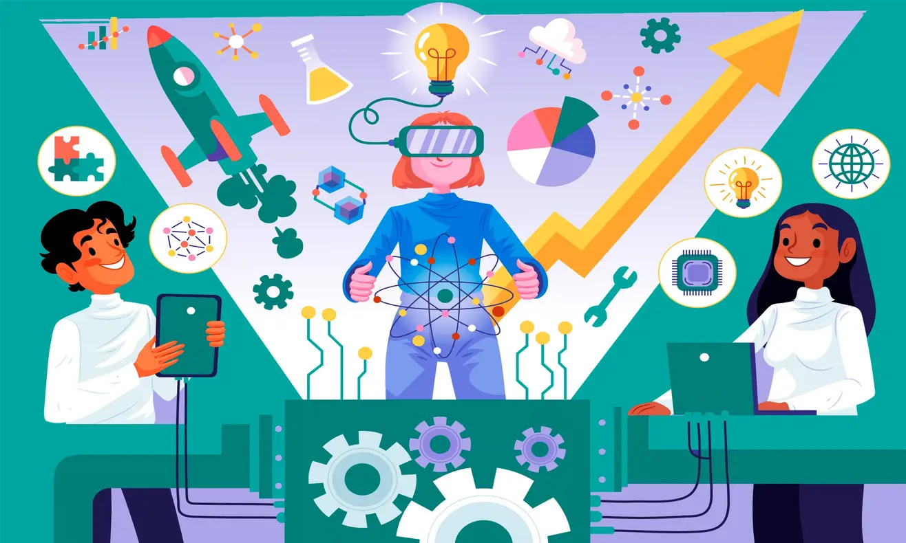

Atención al Cliente: Uso de chatbots y asistentes virtuales para soporte 24/7.
Salud: Diagnóstico de enfermedades y personalización de tratamientos.
Finanzas: Detección de fraudes y análisis de tendencias del mercado.
Transporte: Desarrollo de vehículos autónomos que interpretan datos del entorno.
Marketing: Personalización de campañas publicitarias basadas en el comportamiento del consumidor.
Educación: Plataformas de aprendizaje adaptativo que personalizan la experiencia educativa.
